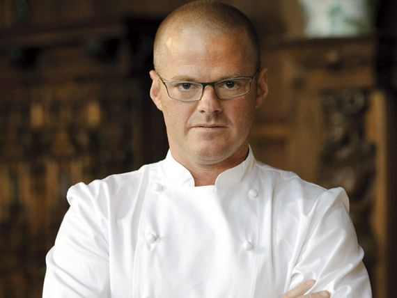

About Cookloards
Cookloards is a family-owned restaurant that has been serving delicious traditional food for over 50 years. Our recipes have been passed down through generations and we take pride in using fresh, high-quality ingredients in every dish we serve.
Our Philosophy
- We believe that food is not just about nourishment, but also about bringing people together.
- We are committed to using fresh, high-quality ingredients in every dish we serve.
- We strive to create a warm and welcoming atmosphere for all of our guests.
- We believe in giving back to our community by supporting local charities and organizations.
Our Menu
We offer a wide range of dishes to satisfy every taste bud. From hearty stews and soups to savory meat dishes and fresh salads, we have something for everyone. Our menu also includes a variety of vegetarian and gluten-free options.
Our Team
-

Pierre La Boulangerie
Pierre La Boulangerie was born and raised in Paris, France. As a child, he spent countless hoursin his grandmother's kitchen, learning the art of French baking. After studying culinary arts in Paris, Pierre moved to New York City to pursue his dreams of becoming a renowned pastry chef.
He quickly rose to fame with his unique approach to traditional French baking, incorporating unexpected ingredients such as matcha and yuzu into classic pastries. His signature dish, the "Matcha Croissant," became an instant hit among New York's foodies.
Pierre's passion for baking extends beyond the kitchen. He is a vocal advocate for sustainable agriculture and often sources his ingredients from local farms. In his free time, he volunteers at a local food bank, sharing his love of baking with the community.
Pierre has been recognized with numerous awards and accolades, including being named "Best Pastry Chef in New York" by the James Beard Foundation. He has also authored several cookbooks, including "Baking with Matcha" and "The Yuzu Revolution."
-

Heston Blumenthal
Heston Blumenthal is a renowned British chef known for his innovative and scientific approach to cooking. Blumenthal's cooking style is characterized by his use of modern techniques and his interest in the science behind food. He is famous for experimenting with unusual flavor combinations, unusual cooking methods, and unexpected ingredients.2
Blumenthal is particularly known for his work in molecular gastronomy, a type of cooking that involves the use of scientific techniques and equipment to create new textures, flavors, and presentations. He has developed a number of new cooking techniques, such as the use of liquid nitrogen to create ice creams and other frozen dishes.
Throughout his career, Blumenthal has been recognized with numerous awards and honors, including multiple Michelin stars and an OBE for his contributions to British gastronomy. He has alsopublished several cookbooks, including "The Fat Duck Cookbook" and "Heston Blumenthal at Home," which offer readers an inside look at his unique approach to cooking.
Testimonials
"Cookloards is the best restaurant in town! The food is always fresh, hot, and delicious. I highly recommend their seafood dishes - they're out of this world!"
"I had an amazing experience at Cookloards. The staff were so friendly and accommodating, and the ambiance of the restaurant was perfect for a night out. The steak I had was cooked to perfection and melted in my mouth."
"I recently visited Cookloards for a family dinner and was blown away by the quality of the food. The menu had a great variety of options, and everything we ordered tasted fantastic. We can't wait to go back!"
"I am a regular customer at Cookloards and have never been disappointed. The food is consistently delicious, and the service is always top-notch. I highly recommend their pasta dishes - they're some of the best I've ever had!"
"Cookloards is hands down the best restaurant in town. The portions are generous, the flavors areincredible, and the prices are reasonable. I have recommended this restaurant to all of my friends and family, and they have all loved it as much as I do."